btb <- read.table(here("data", "btheb.txt"), header = TRUE)Analysis of Correlated Data (CHL5222H) FInal Project
Beating the Blues
names(btb)[1] "drug" "length" "treatment" "bdi.pre" "bdi.2m" "bdi.4m"
[7] "bdi.6m" "bdi.8m" head(btb) drug length treatment bdi.pre bdi.2m bdi.4m bdi.6m bdi.8m
1 No >6m TAU 29 2 2 NA NA
2 Yes >6m BtheB 32 16 24 17 20
3 Yes <6m TAU 25 20 NA NA NA
4 No >6m BtheB 21 17 16 10 9
5 Yes >6m BtheB 26 23 NA NA NA
6 Yes <6m BtheB 7 0 0 0 0tail(btb) drug length treatment bdi.pre bdi.2m bdi.4m bdi.6m bdi.8m
95 No >6m BtheB 16 11 4 2 3
96 Yes >6m BtheB 16 16 10 10 8
97 Yes <6m TAU 28 NA NA NA NA
98 No >6m BtheB 11 22 9 11 11
99 No <6m TAU 13 5 5 0 6
100 Yes <6m TAU 43 NA NA NA NAData preparation
#add participant ID
btb <- btb %>%
mutate(id = row_number()) %>%
select(id, everything())#make drug, length, and treatment as factors
btb <- btb %>%
mutate(
drug = factor(drug, levels = c("No", "Yes")), # Set reference level
length = factor(length, levels = c("<6m", ">6m")), # Set reference level
treatment = factor(treatment, levels = c("TAU", "BtheB")) # Set TAU as reference
)#check structure
str(btb)'data.frame': 100 obs. of 9 variables:
$ id : int 1 2 3 4 5 6 7 8 9 10 ...
$ drug : Factor w/ 2 levels "No","Yes": 1 2 2 1 2 2 2 1 2 2 ...
$ length : Factor w/ 2 levels "<6m",">6m": 2 2 1 2 2 1 1 2 1 2 ...
$ treatment: Factor w/ 2 levels "TAU","BtheB": 1 2 1 2 2 2 1 1 2 2 ...
$ bdi.pre : int 29 32 25 21 26 7 17 20 18 20 ...
$ bdi.2m : int 2 16 20 17 23 0 7 20 13 5 ...
$ bdi.4m : int 2 24 NA 16 NA 0 7 21 14 5 ...
$ bdi.6m : int NA 17 NA 10 NA 0 3 19 20 8 ...
$ bdi.8m : int NA 20 NA 9 NA 0 7 13 11 12 ...#make data set long
btb.long <- btb %>%
pivot_longer(cols = c("bdi.pre","bdi.2m", "bdi.4m", "bdi.6m", "bdi.8m"),
names_to = "visit",
values_to = "score")%>%
mutate(
occasion = case_when(
visit == "bdi.pre" ~ 0,
visit == "bdi.2m" ~ 1,
visit == "bdi.4m" ~ 2,
visit == "bdi.6m" ~ 3,
visit == "bdi.8m" ~ 4))EDA
#make summary table for plotting
btb_summary <- btb.long %>%
group_by(occasion, treatment, drug, length) %>%
summarise(
mean_bdi = mean(score, na.rm = TRUE),
sd_bdi = sd(score, na.rm = TRUE),
.groups = "drop")#Plot mean BDI score over time by group
ggplot(btb_summary, aes(x = occasion, y = mean_bdi, color = treatment, group = treatment)) +
geom_line(size = 1) + # Line plot for mean BDI over time
geom_point(size = 2) + # Add points for means
geom_errorbar(aes(ymin = mean_bdi-sd_bdi, ymax = mean_bdi+sd_bdi), width = 0.2) + # Add 95% CI
facet_grid(drug ~ length) + # Panel by drug and length groups
labs(title = "Mean BDI Score Over Time by Treatment",
x = "Occasion", y = "Mean BDI Score",
color = "Treatment Group") +
theme_minimal() +
theme(strip.text = element_text(size = 12, face = "bold"))+
ylim(0, 60) +
theme(plot.title = element_text(hjust = 0.5))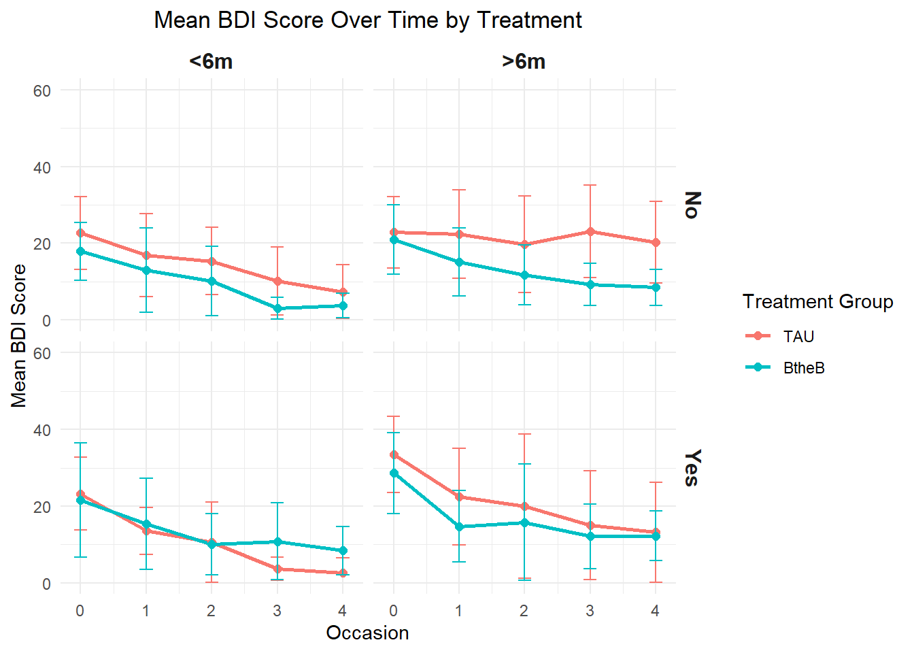
#create histogram of the distribution of scores
ggplot(btb, aes(x = bdi.pre)) +
geom_histogram(binwidth = 5, fill = "steelblue", color = "black", alpha = 0.7) +
labs(title = "Distribution of BDI Scores Pre-Intervention", x = "BDI Score", y = "Count") +
theme_minimal() +
theme(plot.title = element_text(hjust = 0.5))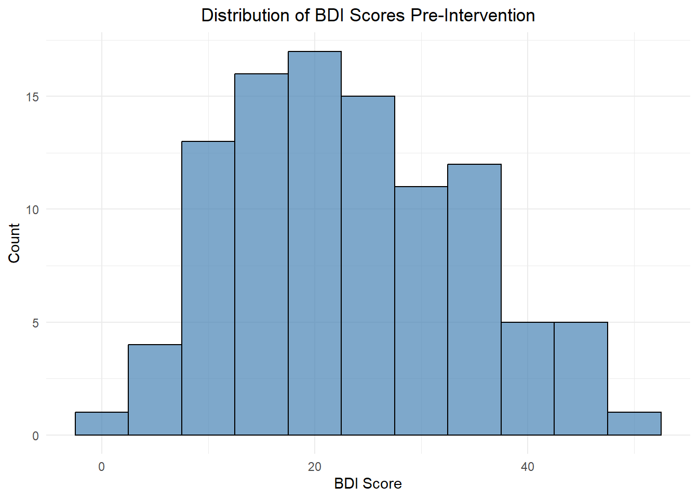
#create histogram of distribution of scores for each treatment group
ggplot(btb, aes(x = bdi.pre)) +
geom_histogram(binwidth = 5, fill = "steelblue", color = "black", alpha = 0.7) +
labs(title = "Distribution of BDI Scores Pre-Intervention", x = "BDI Score", y = "Count") +
theme_minimal() +
facet_wrap(~ treatment) +
theme(plot.title = element_text(hjust = 0.5))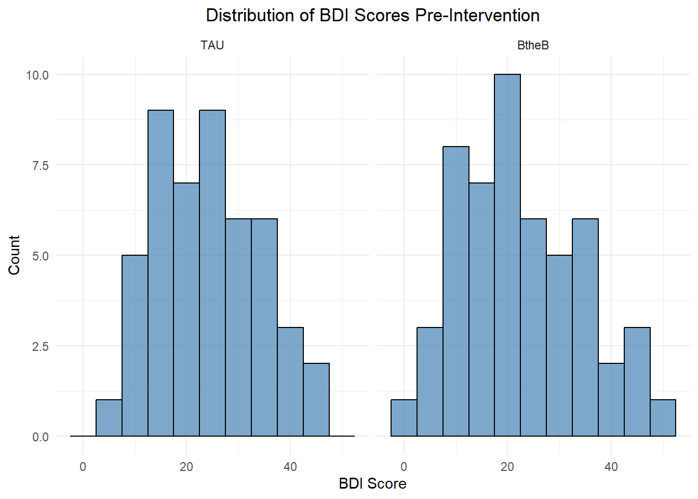
btb_plot_summary <- btb.long %>%
group_by(occasion, treatment) %>%
summarise(mean_score = mean(score, na.rm = TRUE), .groups = "drop")
# Create the plot with trend line for mean values
ggplot(btb.long, aes(x = occasion, y = score, color = treatment)) +
geom_point(alpha = 0.5) + # Show individual data points
geom_line(data = btb_plot_summary, aes(x = occasion, y = mean_score, color = treatment, group = treatment), size = 1.2) + # Line for mean trend
labs(title = "BDI Score Trends Over Time", x = "Occasion", y = "BDI Score",
color = "Treatment") +
scale_x_continuous(breaks = c(0, 1, 2, 3, 4), # Specify breaks
labels = c("Baseline", "Month 2", "Month 4", "Month 6", "Month 8")) +
theme_minimal() +
ylim(0, 60) +
theme(plot.title = element_text(hjust = 0.5))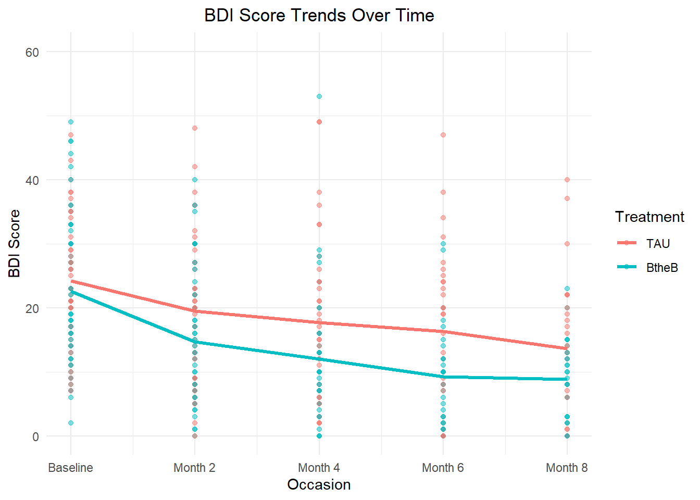
#looks like there is a treatment difference
#looks like they are parallel
#looks like small time trend, especially at beginning of trial, then it smooths out
#most likely linear#spaghetti plot - individual trajectory and a loess smoother
ggplot(btb.long, aes(x = occasion, y = score, group = id, color = factor(treatment))) +
geom_line(alpha = 0.4) + # Individual trajectories
geom_smooth(aes(group = treatment), method = "loess", se = FALSE, linewidth = 1.2) +
labs(
x = "Occasion",
y = "BDI Score",
color = "Treatment",
title = "BDI Score Trends Over Time"
) +
scale_x_continuous(breaks = c(0, 1, 2, 3, 4),
labels = c("Baseline", "Month 2", "Month 4", "Month 6", "Month 8"))+
theme_minimal() +
theme(plot.title = element_text(hjust = 0.5))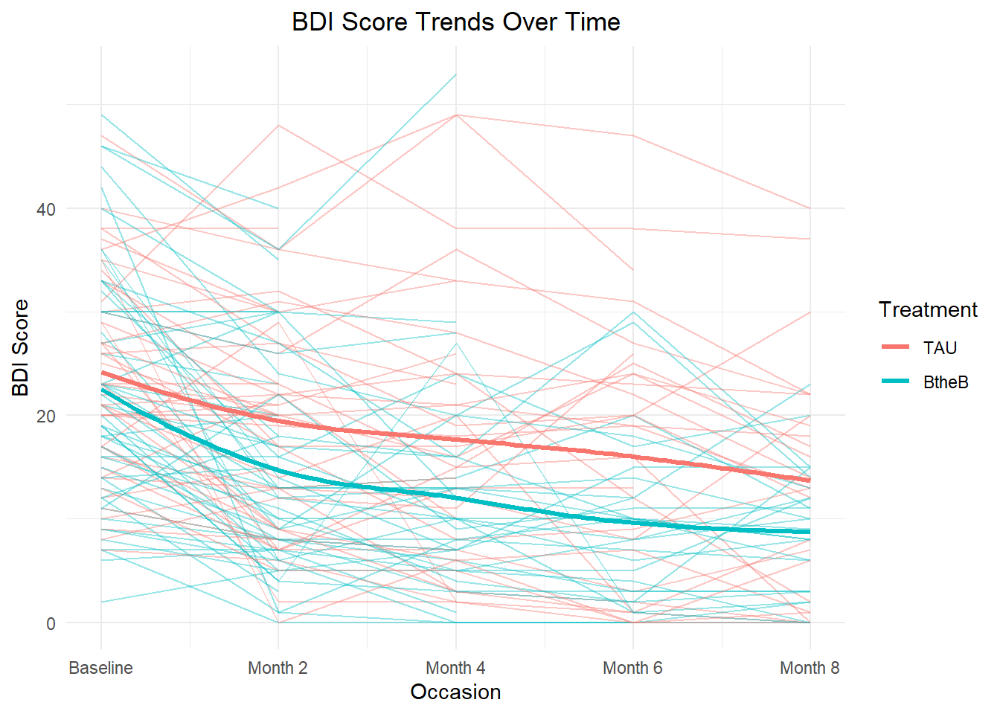
#spaghetti plot shows high variation between subject BDI scores so we will fit a LMM with
#random intercept and maybe random slope to account for this variation# Summarize counts for Table 1
summary_table <- btb %>%
group_by(drug, length, treatment) %>%
summarise(Count = n(), .groups = "drop") %>%
pivot_wider(names_from = treatment, values_from = Count, values_fill = 0) %>%
rename("Treatment as Usual" = `TAU`, "Beat the Blues" = `BtheB`) %>%
mutate(Total = `Treatment as Usual` + `Beat the Blues`) %>%
rename(Drug = drug, Length = length)
# Compute total row
total_row <- summary_table %>%
summarise(across(where(is.numeric), sum)) %>%
mutate(Drug = "Total", Length = "")
# Combine with total row
summary_table <- bind_rows(summary_table, total_row)summary_table %>%
kable(format = "html", caption = "<p style='text-align:center; font-weight:bold;'>
Table 1. Number of Participants per Treatment Group</p>", align = "c") %>%
kable_styling(full_width = FALSE, bootstrap_options = c("striped", "hover")) %>%
add_header_above(c(" " = 2, "Treatment Group" = 3)) | Drug | Length | Treatment as Usual | Beat the Blues | Total |
|---|---|---|---|---|
| No | <6m | 15 | 9 | 24 |
| No | >6m | 19 | 13 | 32 |
| Yes | <6m | 8 | 17 | 25 |
| Yes | >6m | 6 | 13 | 19 |
| Total | 48 | 52 | 100 |
btb_summary2 <- btb.long %>%
group_by(treatment, occasion) %>%
summarise(
mean_bdi = mean(score, na.rm = TRUE),
sd_bdi = sd(score, na.rm = TRUE)
) %>%
mutate(occasion = case_when(
occasion == 0 ~ "Baseline",
occasion == 1 ~ "Month 2",
occasion == 2 ~ "Month 4",
occasion == 3 ~ "Month 6",
occasion == 4 ~ "Month 8"
)) %>%
ungroup()#Table for Mean and SD BDI scores over time by treatment group
# Pivot data to wide format
summary2_wide <- btb_summary2 %>%
pivot_wider(names_from = treatment, values_from = c(mean_bdi, sd_bdi))
#Reorder columns
summary2_wide <- summary2_wide %>%
select(occasion, `mean_bdi_TAU`, `sd_bdi_TAU`, `mean_bdi_BtheB`, `sd_bdi_BtheB`) %>%
mutate(across(where(is.numeric), ~round(., 2)))
colnames(summary2_wide) <- c("Occasion", "Mean", "SD", "Mean", "SD")
summary2_wide %>%
kable(format = "html", caption = "<p style='text-align:center; font-weight:bold;'>
Mean BDI Scores Over Time by Treatment Group</p>", align = "c") %>%
kable_styling(full_width = FALSE, bootstrap_options = c("striped", "hover")) %>%
add_header_above(c(" " = 1, "Treatment as Usual" = 2, "Beat the Blues" = 2))| Occasion | Mean | SD | Mean | SD |
|---|---|---|---|---|
| Baseline | 24.19 | 9.82 | 22.54 | 11.74 |
| Month 2 | 19.47 | 11.08 | 14.71 | 10.12 |
| Month 4 | 17.67 | 12.66 | 12.03 | 10.37 |
| Month 6 | 16.28 | 12.79 | 9.24 | 7.99 |
| Month 8 | 13.60 | 11.47 | 8.85 | 6.09 |
ggplot(btb_summary2, aes(x = occasion, y = mean_bdi, color = treatment, group = treatment)) +
geom_line(size = 1) + # Line plot for mean BDI over time
geom_point(size = 2) + # Add points for means
geom_errorbar(aes(ymin = mean_bdi - sd_bdi*1.96, ymax = mean_bdi + sd_bdi*1.96), width = 0.2) + # Add 95% CI
labs(title = "Mean BDI Score Over Time by Treatment",
x = "Occasion", y = "Mean BDI Score",
color = "Treatment Group") +
theme_minimal() +
theme(strip.text = element_text(size = 12, face = "bold"))+
theme(plot.title = element_text(hjust = 0.5))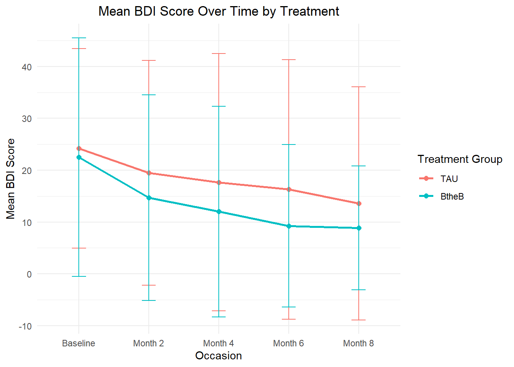
# empirical covariance and correlation matrix
btb.nona <- na.omit(btb)
cov(btb.nona[, 5:9]) bdi.pre bdi.2m bdi.4m bdi.6m bdi.8m
bdi.pre 92.33296 36.07278 41.74623 52.18477 34.29148
bdi.2m 36.07278 105.69947 79.35030 88.77149 67.33296
bdi.4m 41.74623 79.35030 108.21229 93.77903 69.89027
bdi.6m 52.18477 88.77149 93.77903 120.79789 82.92081
bdi.8m 34.29148 67.33296 69.89027 82.92081 86.58937cor(btb.nona[, 5:9]) bdi.pre bdi.2m bdi.4m bdi.6m bdi.8m
bdi.pre 1.0000000 0.3651445 0.4176386 0.4941237 0.3835090
bdi.2m 0.3651445 1.0000000 0.7419487 0.7856108 0.7038158
bdi.4m 0.4176386 0.7419487 1.0000000 0.8202340 0.7220149
bdi.6m 0.4941237 0.7856108 0.8202340 1.0000000 0.8107773
bdi.8m 0.3835090 0.7038158 0.7220149 0.8107773 1.0000000# the covariance and correlation matrices are not observed obvious patternsMissing Data Exploration
#summarizing number of non-NA observations at each occasion
measurement_counts <- btb.long %>%
group_by(occasion) %>%
summarise(n = sum(!is.na(score)))
measurement_counts# A tibble: 5 × 2
occasion n
<dbl> <int>
1 0 100
2 1 97
3 2 73
4 3 58
5 4 52#48% of data is missing #summarize missing data per group
measurement_counts2 <- btb.long %>%
group_by(treatment, occasion) %>%
summarise(n = sum(is.na(score)), .groups = "drop")
measurement_counts2_wide <- measurement_counts2 %>%
pivot_wider(names_from = treatment, values_from = n) %>%
mutate(Total = TAU + BtheB)
measurement_counts2_wide# A tibble: 5 × 4
occasion TAU BtheB Total
<dbl> <int> <int> <int>
1 0 0 0 0
2 1 3 0 3
3 2 12 15 27
4 3 19 23 42
5 4 23 25 48library(mice)
sapply(btb.long, function(x) sum(is.na(x))) id drug length treatment visit score occasion
0 0 0 0 0 120 0 btb %>%
dplyr::select(-id, -drug, -length, -treatment) %>%
md.pattern()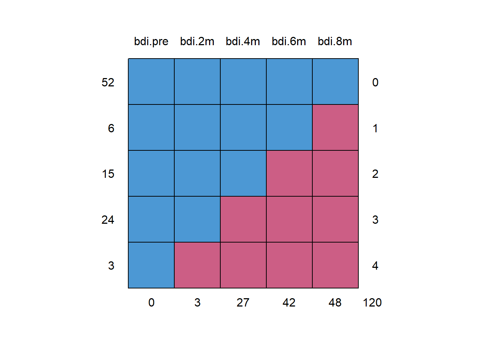
bdi.pre bdi.2m bdi.4m bdi.6m bdi.8m
52 1 1 1 1 1 0
6 1 1 1 1 0 1
15 1 1 1 0 0 2
24 1 1 0 0 0 3
3 1 0 0 0 0 4
0 3 27 42 48 120# missing data is monotone, arising from dropout, assume MAR, use likelihood methods like in classMethods
Model Selection Process:
- no need to include treatment because it is a randomized trial
# random intercept
lme.intp <- lme(score ~ occasion + drug + length + occasion:treatment,
random = ~ 1 | id, data = btb.long, na.action = na.omit)
#summary(lme.intp)
# random intercept and slope
lme.slope <- lme(score ~ occasion + drug + length + occasion:treatment,
random = ~ occasion | id, data = btb.long, na.action = na.omit)
#summary(lme.slope)
# compare using likelihood ratio test
lme.intp.ml <- lme(score ~ occasion + drug + length + occasion:treatment,
random = ~ 1 | id, method = "ML",
data = btb.long, na.action = na.omit)
lme.slope.ml <- lme(score ~ occasion + drug + length + occasion:treatment,
random = ~ occasion | id, method = "ML",
data = btb.long, na.action = na.omit)
anova(lme.intp.ml, lme.slope.ml) # lme.intp.ml is better Model df AIC BIC logLik Test L.Ratio p-value
lme.intp.ml 1 7 2694.802 2722.383 -1340.401
lme.slope.ml 2 9 2695.618 2731.079 -1338.809 1 vs 2 3.184176 0.2035# drop drug for the intercept model since not significant
lme.intp1 <- lme(score ~ occasion + length + occasion:treatment, random = ~ 1 | id,
data = btb.long, na.action = na.omit)
lme.intp1.ml <- lme(score ~ occasion + length + occasion:treatment,
random = ~ 1 | id, method = "ML",
data = btb.long, na.action = na.omit)
anova(lme.intp1.ml, lme.intp.ml) Model df AIC BIC logLik Test L.Ratio p-value
lme.intp1.ml 1 6 2693.121 2716.762 -1340.561
lme.intp.ml 2 7 2694.802 2722.383 -1340.401 1 vs 2 0.3191776 0.5721# AIC and BIC function for model comparison
outAIC <- function(x){
sumx <- summary(x)
out <- c(sumx$AIC, sumx$BIC)
names(out) <- c("AIC", "BIC")
out
}
allaic <- rbind(
outAIC(lme.intp),
outAIC(lme.slope),
outAIC(lme.intp1)
)
rownames(allaic) <- c("lme.intp", "lme.slope", "lme.intp1")
allaic AIC BIC
lme.intp 2687.283 2714.772
lme.slope 2687.582 2722.924
lme.intp1 2688.791 2712.368#AIC is similar for all models but BIC is lowest for lme.intp1 (which is also more parsimonious)
#so we go with that model over the othersCreate a binary indicator of pre- and post-treatment: post
btb.long <- btb.long %>%
group_by(id) %>%
mutate(time = row_number() - 1, # time: 0 1 2 3 4
post = ifelse(time > 0, 1, 0)) %>%
ungroup()# random intercept
mod1.intp <- lme(score ~ post + drug + length + post:treatment,
random = ~ 1 | id, data = btb.long, na.action = na.omit)
#summary(mod1.intp)
# random intercept and slope model
mod1.slope <- lme(score ~ post + drug + length + post:treatment,
random = ~ post | id, data = btb.long, na.action = na.omit)
#summary(mod1.slope)
# compare using likelihood ratio test
mod1.intp.ml <- lme(score ~ post + drug + length + post:treatment, random = ~ 1 | id,
method = "ML", data = btb.long, na.action = na.omit)
mod1.slope.ml <- lme(score ~ post + drug + length + post:treatment, random = ~ post | id,
method = "ML", data = btb.long, na.action = na.omit)
anova(mod1.intp.ml, mod1.slope.ml) Model df AIC BIC logLik Test L.Ratio p-value
mod1.intp.ml 1 7 2689.867 2717.448 -1337.933
mod1.slope.ml 2 9 2669.929 2705.390 -1325.964 1 vs 2 23.93791 <.0001#since p-value <0.0001, the random intercept and slope model is significantly better
mod1.slope1 <- lme(score ~ post + length + post:treatment,
random = ~ post | id, data = btb.long, na.action = na.omit)allaic <- rbind(
outAIC(mod1.slope1), # final model
outAIC(mod1.slope),
outAIC(mod1.intp),
outAIC(lme.intp1),
outAIC(lme.intp)
)
rownames(allaic) <- c("mod1.slope1", "mod1.slope", "mod1.intp", "lme.intp1", "lme.intp")
allaic AIC BIC
mod1.slope1 2660.114 2691.551
mod1.slope 2657.337 2692.680
mod1.intp 2678.096 2705.584
lme.intp1 2688.791 2712.368
lme.intp 2687.283 2714.772#BIC is smallest for random slope and intercept model when time is divided as pre and post without drug: mod1.slope1Final Model: \[Y_{ij} = \beta0 + \beta1 \text{ Post}_{ij} + \beta2 \text{ Length}_i + \beta3 \text{ Post}_{ij} \times \text{Treatment}_{i} + b_{1i} + b_{2i} \text{ Post}_{ij} + \epsilon_{ij}\]
# exclude drug because it is not significant in all models (choose the parsimonious model)
# final model
mod1.slope1 <- lme(score ~ post + length + post:treatment,
random = ~ post | id, data = btb.long, na.action = na.omit)
summary(mod1.slope1)Linear mixed-effects model fit by REML
Data: btb.long
AIC BIC logLik
2660.114 2691.551 -1322.057
Random effects:
Formula: ~post | id
Structure: General positive-definite, Log-Cholesky parametrization
StdDev Corr
(Intercept) 9.367765 (Intr)
post 6.648816 -0.269
Residual 5.249012
Fixed effects: score ~ post + length + post:treatment
Value Std.Error DF t-value p-value
(Intercept) 21.776532 1.455234 278 14.964278 0.0000
post -6.128568 1.281959 278 -4.780627 0.0000
length>6m 3.046016 1.925801 98 1.581688 0.1169
post:treatmentBtheB -3.063345 1.665841 278 -1.838919 0.0670
Correlation:
(Intr) post lngt>6
post -0.213
length>6m -0.675 -0.036
post:treatmentBtheB -0.021 -0.690 0.031
Standardized Within-Group Residuals:
Min Q1 Med Q3 Max
-3.04625067 -0.51109698 -0.04634137 0.38939377 3.91792103
Number of Observations: 380
Number of Groups: 100 summary_df <- broom.mixed::tidy(mod1.slope1, effect = "fixed", conf.int = TRUE)
summary_df %>%
kable(format = "html", digits = 2, caption = "Fixed Effects of the LME Model") %>%
kable_styling(bootstrap_options = c("striped", "hover"), full_width = FALSE)| effect | term | estimate | std.error | df | statistic | p.value | conf.low | conf.high |
|---|---|---|---|---|---|---|---|---|
| fixed | (Intercept) | 21.78 | 1.46 | 278 | 14.96 | 0.00 | 18.91 | 24.64 |
| fixed | post | -6.13 | 1.28 | 278 | -4.78 | 0.00 | -8.65 | -3.60 |
| fixed | length>6m | 3.05 | 1.93 | 98 | 1.58 | 0.12 | -0.78 | 6.87 |
| fixed | post:treatmentBtheB | -3.06 | 1.67 | 278 | -1.84 | 0.07 | -6.34 | 0.22 |
G <- getVarCov(mod1.slope1) # G matrix
GRandom effects variance covariance matrix
(Intercept) post
(Intercept) 87.755 -16.748
post -16.748 44.207
Standard Deviations: 9.3678 6.6488 vcov <- mod1.slope1$varFix # covariance of fixed effects (beta) estimates
vcov (Intercept) post length>6m post:treatmentBtheB
(Intercept) 2.11770722 -0.39750634 -1.89144245 -0.05028204
post -0.39750634 1.64341914 -0.08920198 -1.47344877
length>6m -1.89144245 -0.08920198 3.70871069 0.09859223
post:treatmentBtheB -0.05028204 -1.47344877 0.09859223 2.77502525mod_summary <- coef(summary(mod1.slope1))
# follow-up compared to baseline
# 95% CI for TAU group
mod_summary["post", "Value"] + c(-1, 1)*qnorm(0.975)*mod_summary["post", "Std.Error"][1] -8.641162 -3.615975# 95% CI for BtheB group
(mod_summary[2,1] + mod_summary[4,1]) +
c(-1, 1)*qnorm(0.975)*sqrt(vcov[2,2] + vcov[4,4] + 2*vcov[2,4])[1] -11.569494 -6.814334# 95% quintile of the random slope with the population effect as the center
# to understand how wide (or narrow) the variance of the random effects are
mod_summary[1,1] + c(-1,1)*qnorm(0.975)*sqrt(G[1,1]) # random intp[1] 3.416049 40.137015mod_summary[4,1] + c(-1,1)*qnorm(0.975)*sqrt(G[2,2]) # random slope[1] -16.094784 9.968094Model Diagnostics - Assumption
Normality assumption check for stage-one residuals:
btb.long <- na.omit(btb.long)
# standardized stage-one residuals
rhat <- resid(mod1.slope1, type = "normalized")
head(rhat) 1 1 1 2 2 2
1.0991135 -0.7380106 -0.7380106 0.3687227 -0.6362111 0.8878852 # standardized stage-one residuals by "hand"
condmean <- predict(mod1.slope1) # conditional means
y <- btb.long$score
stg1r <- y - condmean
estsigma2 <- sigma(mod1.slope1)^2
estsigmamat <- estsigma2 * diag(dim(btb.long)[1])
L <- chol(estsigmamat)
stg1rstar <- solve(L) %*% stg1r
head(stg1rstar) # they matched [,1]
[1,] 1.0991135
[2,] -0.7380106
[3,] -0.7380106
[4,] 0.3687227
[5,] -0.6362111
[6,] 0.8878852# comparing raw stage-one residuals and standardized residuals
rtype <- c(rep("Raw", length(stg1r)), rep("Standardized", length(stg1r)))
resid <- c(stg1r, stg1rstar)
stg1resids <- as.data.frame(cbind(rtype, as.numeric(resid)))
ggplot(stg1resids, aes(x = resid, fill = rtype)) +
geom_histogram(position = "identity", alpha = 0.5, bins = 50) +
labs(y = "Count", x = "Residuals", fill = "Type") +
ggtitle("Histogram of Comparing Raw Stage-One Residuals
and Standardized Residuals") +
theme_minimal() +
theme(plot.title = element_text(hjust = 0.5))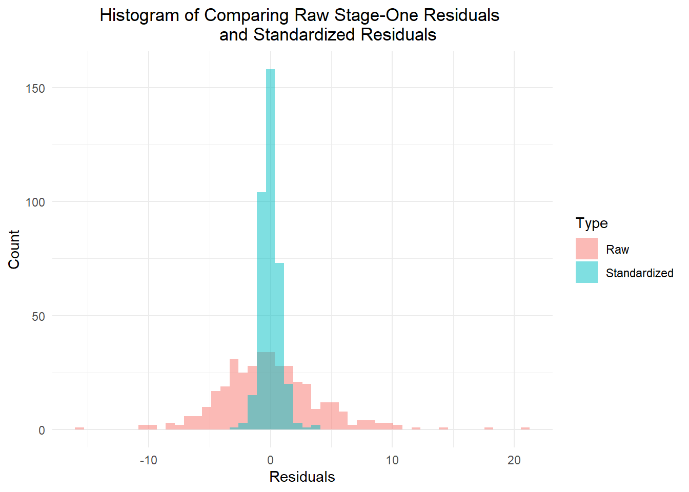
# qq plot of standardized residuals
qqnorm(rhat, pch = 1, main = "Normal Q-Q Plot of Stage-One Standardized Residuals")
qqline(rhat, col = "steelblue", lwd = 2)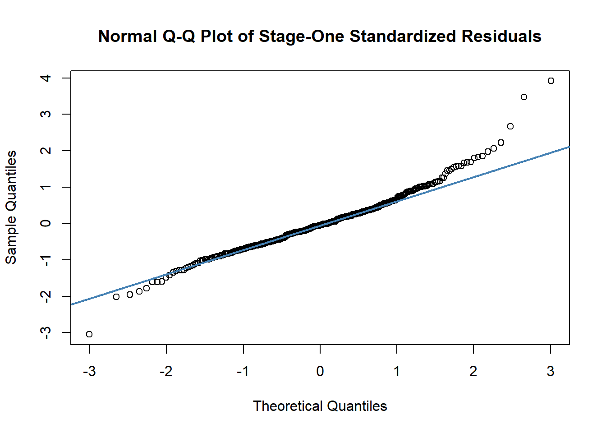
# Plot of standardized residuals against predicted mean
yhat <- predict(mod1.slope1)
plot(y = rhat, x = yhat, main = "Standardized Residuals vs Predicted Mean")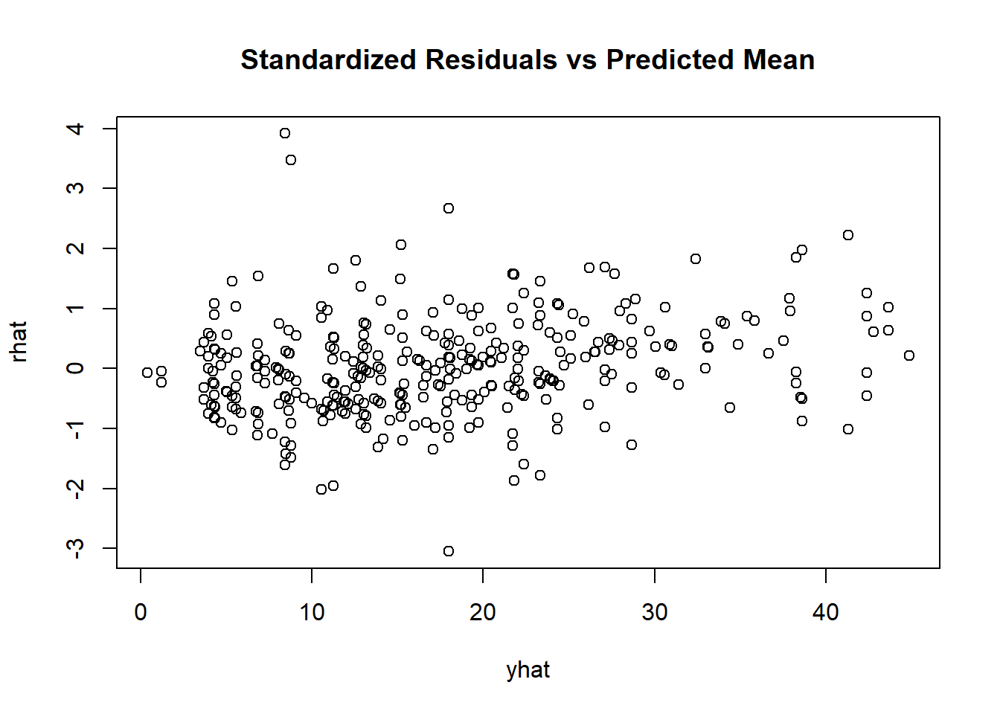
Normality assumption check for random effects:
par(mfrow = c(1, 2))
b1hat <- ranef(mod1.slope1)[,1]
b2hat <- ranef(mod1.slope1)[,2]
# qq plot of random effects
qqnorm(b1hat, pch=1, main = "Normal Q-Q Plot of b1")
qqline(b1hat, col = "steelblue", lwd = 2)
qqnorm(b2hat, pch=1, main = "Normal Q-Q Plot of b2")
qqline(b2hat, col = "steelblue", lwd = 2)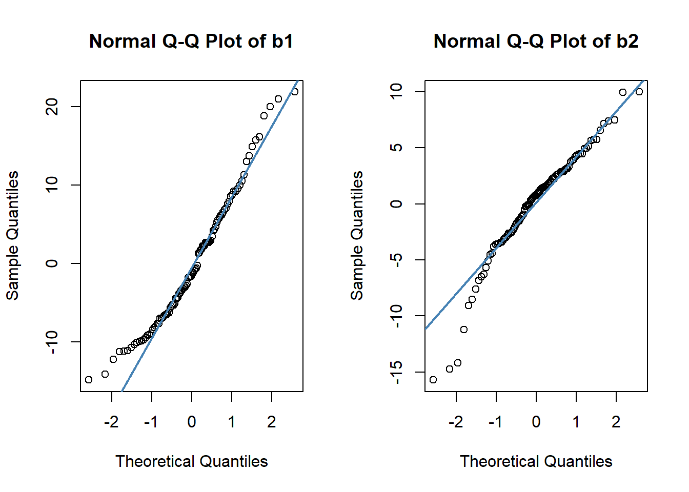
# histogram of random effects
ranef(mod1.slope1) %>%
pivot_longer(cols = c("(Intercept)", "post"),
names_to = "ranefs",
values_to = "estimates") %>%
ggplot(aes(x = estimates)) +
geom_histogram(position = "identity", alpha = 0.5, bins = 50, fill = "orange") +
facet_grid(~ ranefs)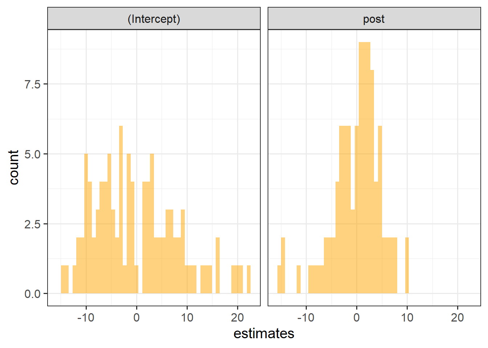
# a little bit skewed, but as long as it's not overly skewed, it is fine